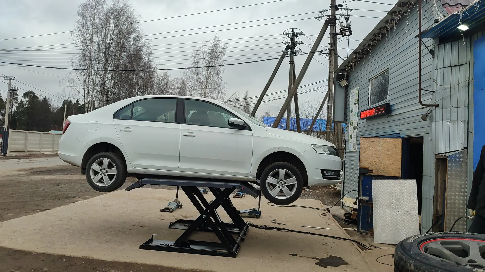
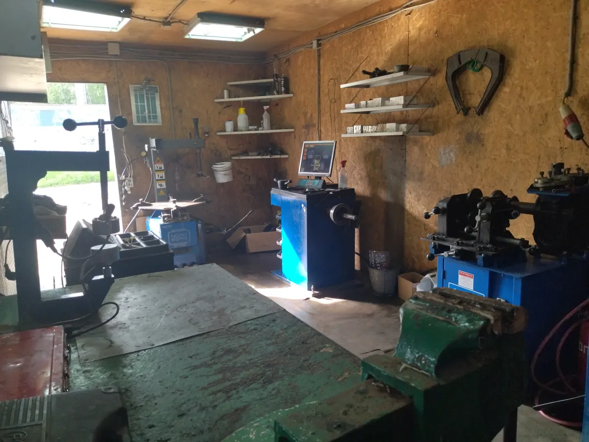
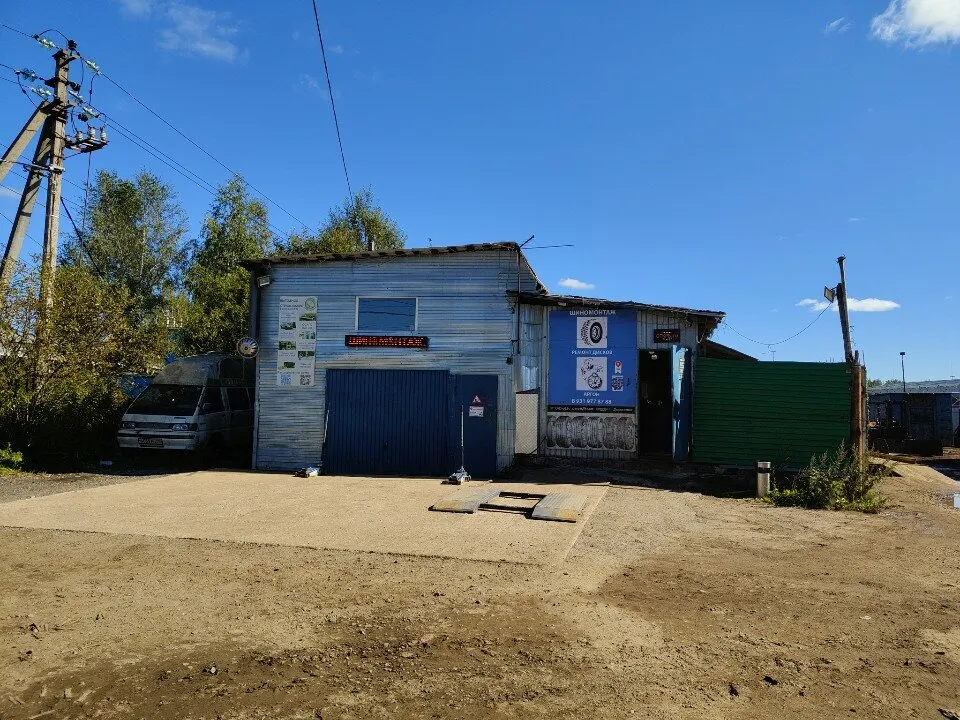
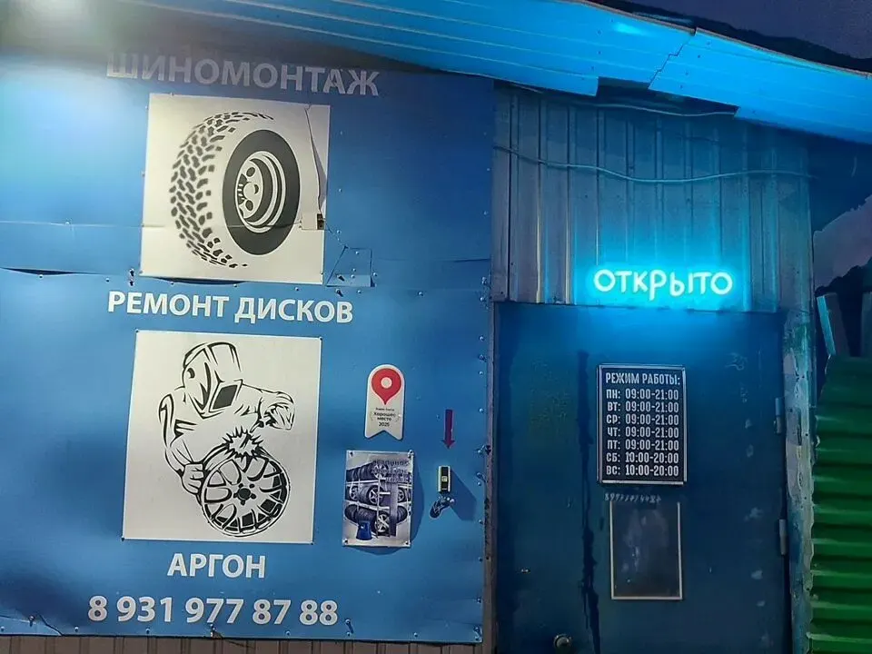

Шиномонтаж · ремонт дисков · Всеволожск
Шиномонтаж во Всеволожске – запись онлайн
Мастерская на Всеволожском проспекте. Переобувка, ремонт литых дисков аргонной сваркой, хранение колёс. Цены по прайсу, запись в мессенджер за минуту.

- Рейтинг 4,8 на Яндекс.Картах, 97 оценок
- Сварка аргоном и ремонт литых дисков
- Запись онлайн в WhatsApp
Цены по прайсу
Прайс с вашей карточки на Яндекс.Картах.
Шиномонтаж и хранение
- Переобувка от R12 до R22от 2400 до 5500 ₽ в зависимости от размераот 2 400 ₽
- Хранение колёс4 шт.2 000 ₽
- Ремонт боковых порезов1 000 ₽
Ремонт дисков
- Ремонт литых дисковот 700 ₽от 700 ₽
- Сварка литых дисков в аргонеот 1 500 ₽
- Сварка аргономза 1 см, от 500 ₽150 ₽
Цены взяты с карточки на Яндекс.Картах, на карточке они давно не обновлялись.
Как записаться
- 01
Выбираете услугу и время
Кнопка «Записаться» открывает форму записи на этой странице.
- 02
Сообщение уходит в WhatsApp
Оно уже написано: услуга, день и время. Остаётся отправить.
- 03
Приезжаете на Всеволожский проспект
Мастерская работает и в выходные.



Что удобно
Ремонт дисков аргонной сваркой
Трещины и сколы на литых дисках восстанавливают на месте.
Хранение колёс
Комплект можно оставить на сезон.
Работают и в выходные
Суббота и воскресенье – с 10:00 до 20:00.
Отзывы с Яндекс.Карт
«Отличный шиномонтаж! Цены адекватные. Есть хранение шин. Сделали всё быстро и качественно!!!»
Сергей Малюк · 22 апреля 2025
«Ребята молодцы знают своё дело, переобуваюсь уже 3 года у них и постоянно на высоте, проблем никогда не было»
Пётр Клюнин · 12 ноября 2025
«Очень качественный шиномонтаж, цены доступные, были проблемы с диском, обговорили, сделали сразу же, остался доволен, всем рекомендую данный шиномонтаж, ребята молодцы!»
Алексей · 6 мая 2024
Отзывы с карточки на Яндекс.Картах, без правок.
Контакты
- Адрес
- Всеволожский проспект, Всеволожск
- Часы
- Пн–Пт 09:00–21:00, Сб–Вс 10:00–20:00
- Телефон
- +7 (931) 977-87-88